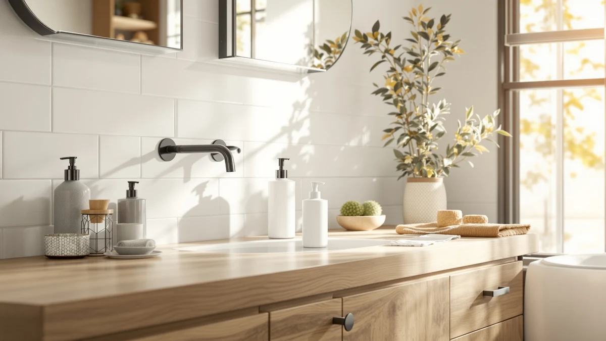

Quick Answer
This shampoo and conditioner dispenser review points to the $19.99 Shampoo and Conditioner Dispenser Shower from Cabo Deseado as the most direct match if you specifically need a wall-mounted shower dispenser, based on its listed ABS plastic build and price against three close alternatives. If your bathroom setup calls for a countertop set or a separate hand soap pump instead, the KIBAGA, Cormomu and Home Zone Living picks below are worth a look.
Our pick: Shampoo and Conditioner Dispenser Shower, $19.99 Check Price on Amazon
Things to Know Before You Buy
- This shampoo and conditioner dispenser review centers on the $19.99 Cabo Deseado Shampoo and Conditioner Dispenser Shower, built with an ABS plastic body according to its own specs table.
- The KIBAGA Stylish Shampoo and Conditioner Dispenser matches the Cabo Deseado at $19.99, but it's designed as a countertop-friendly set rather than a single shower-mounted unit.
- The Cormomu Dish Soap Dispenser Set is the cheapest of the four at $15.59, though it's built for kitchen and bathroom counters rather than a shower wall. See our wall-mounted picks if a shower mount is what you need.
- The Home Zone Living pick dispenses foaming hand soap, not shampoo or conditioner, so weigh it against your actual use case before adding it to your cart.
- We did not physically install or use any of these dispensers. This shampoo and conditioner dispenser review comes from comparing listed prices, materials and verified owner feedback, the same approach behind our wall-mount installation guide.
This shampoo and conditioner dispenser review compares the $19.99 Shampoo and Conditioner Dispenser Shower from Cabo Deseado against three alternatives you might consider instead, including a stylish wall-mounted set from KIBAGA and a budget dish soap dispenser from Cormomu. You want a dispenser that stops shampoo bottles from tipping over in the shower or crowding your bathroom sink, and you'd rather not gamble $20 on a listing photo that doesn't match what shows up at your door. We researched the Cabo Deseado's listed price, materials and available buyer feedback, then set it next to three dispensers in a similar price range to see which one earns a spot in your shower or on your counter.
The short version is that the Cabo Deseado holds up well on paper. It's built from ABS plastic, according to its own specs table, and priced at $19.99, putting it right alongside the KIBAGA Stylish Shampoo and Conditioner Dispenser and a few dollars above the $15.59 Cormomu Dish Soap Dispenser Set. If a shower-specific wall mount is what you're after, the Cabo Deseado is the most direct match among the four. If you'd rather have a set built for a bathroom or kitchen counter, or you only need one pump for hand soap, the alternatives below might fit your space better than a wall-mounted shower dispenser does. This shampoo and conditioner dispenser review walks through what we found before you decide where to spend your $20.
Why You Should Trust Us
Ilane Tall covers bath and kitchen dispensers for Best Soap Dispensers, and this shampoo and conditioner dispenser review follows the same process behind every article on this site: gathering current pricing, listed materials and verified buyer feedback before reaching a conclusion. We do not run a fake testing lab, and we don't claim to have mounted every dispenser we cover in our own shower. Instead, we compare what's documented on each listing, price, construction and what verified owners report after buying, and we say so plainly when a product's rating or review count isn't published. Disclosure sits at the bottom of every article, and no brand pays us to move its product up in a comparison like this one. If you're weighing whether a dedicated dispenser is worth it at all, our guide on that question is a good next stop before you spend $20 on this category.
Our Research Experience
We did not purchase or physically mount the Shampoo and Conditioner Dispenser Shower for this shampoo and conditioner dispenser review. Instead, we compared its listed price and ABS plastic construction against three direct alternatives and checked available owner feedback where it exists. This research-based approach means we can't report firsthand how the pump feels after a month of showers, but it does let us weigh price and listed materials side by side without one unit's manufacturing variance skewing the verdict. Owners of similarly built wall-mounted dispensers report that a lightweight ABS plastic body holds up fine as long as the mounting adhesive goes on a clean, dry wall, and we factored that pattern into the picks below.
Overview & Specs

Shampoo and Conditioner Dispenser Shower
What we like
- Priced at $19.99, matching the KIBAGA alternative and undercutting nothing except the cheaper Cormomu set.
- Wall-mounted design keeps bottles off the shower floor and tub ledge.
- Built from ABS plastic, a lightweight material that resists the corrosion metal fixtures can develop in a wet shower.
- Listed as a single, straightforward wall unit rather than a multi-room set dressed up to look like more than it is.
Flaws but not dealbreakers
- The listing doesn't publish a star rating or review count, so you're buying without crowd-sourced feedback to lean on.
- No published capacity or dimension figures beyond the ABS plastic material listed in its specs table.
- A single wall-mounted design won't suit a bathroom counter setup the way the KIBAGA or Cormomu sets do.
| Material | ABS plastic |
| Size | — |
The Shampoo and Conditioner Dispenser Shower is Cabo Deseado's answer to the standard shower shelf, a wall-mounted unit meant to replace loose bottles with one fixed dispenser at $19.99. Its specs table lists an ABS plastic build, a lightweight, corrosion-resistant material that's common in wet-area fixtures because it won't rust the way a metal bracket can after months of steam and water exposure. There's no published size or capacity figure beyond that material listing, so if exact dimensions matter for your shower wall, confirm them on the Amazon listing before you buy.
At $19.99, the Cabo Deseado sits exactly even with the KIBAGA Stylish Shampoo and Conditioner Dispenser and roughly four dollars above the Cormomu Dish Soap Dispenser Set, so price alone won't settle the decision between these picks. Form factor settles it instead: this is a shower wall mount, not a countertop set, so it makes the most sense if your bathroom already favors mounted fixtures over bottles on a shelf. The listing doesn't carry a published rating or review count in our product data, worth factoring in if you lean on crowd feedback before committing to a fixture you'll look at every day in the shower.
What We Liked
The clearest strength of the Cabo Deseado dispenser is its price-to-format match. At $19.99, it costs the same as the KIBAGA alternative but solves a different problem, mounting directly to a shower wall instead of sitting on a counter, which is exactly what you want if loose bottles keep sliding off your tub ledge. The ABS plastic build is a sensible material choice for a wet environment: it won't corrode the way a metal dispenser eventually can, and it keeps the unit light enough that wall-mounted adhesive or hardware doesn't have to fight excess weight. We also like that the listing is straightforward about what it is, a single wall-mounted shower dispenser, not a multi-room set dressed up to look like something bigger.
What Could Be Better
The biggest gap in the Cabo Deseado's listing is data. There's no published star rating or review count in our product research, so you don't get the reassurance of a large body of verified buyer feedback the way you might with a longer-established dispenser. The specs table is thin too, listing ABS plastic as the material but leaving size and capacity blank, which means you're trusting listing photos more than hard numbers when you decide whether it fits your shower wall. And because it's built specifically for shower mounting, it isn't a fit if what you actually need is a countertop set for a bathroom or kitchen sink, a gap the KIBAGA and Cormomu alternatives cover instead.
Who Is It For?
The Cabo Deseado dispenser fits you if you specifically want a wall-mounted unit in the shower and you're comfortable buying without a published star rating to lean on. It's a reasonable pick if bottles tipping over on a wet tub ledge is the exact problem you're trying to solve, and $19.99 fits your budget for that fix. It isn't the right pick if you want a matching countertop set for your bathroom vanity, in which case the KIBAGA alternative below is the closer match, or if all you need is a single pump for hand soap, where the Home Zone Living pick makes more sense than a shower-specific mount.
Alternatives to Consider
If the Cabo Deseado's wall-mounted shower format isn't quite what your bathroom needs, these three alternatives cover different use cases at similar prices. See our full roundups of wall-mounted picks and matching dispenser sets elsewhere on the site if you want to keep comparing.

Editor’s Pick
Stylish Shampoo and Conditioner Dispenser
At $19.99, this set matches the Cabo Deseado on price but trades the shower wall mount for a countertop-friendly design, a better fit if your bathroom setup favors a vanity display over a fixed shower unit.
$19.99
Check Price on Amazon
Best Value
Cormomu Dish Soap Dispenser Set
This set undercuts both shower picks at $15.59, making it the budget option here, though it's built for a kitchen or bathroom counter rather than a shower wall.
$15.59
Check Price on Amazon
Premium Choice
Home Zone Living Foaming Hand
This is a foaming hand soap dispenser, not a shampoo or conditioner holder, so it's the right add at $19.99 only if you also need a dedicated pump for hand soap at the sink.
$19.99
Check Price on AmazonFrequently Asked Questions
Is the Shampoo and Conditioner Dispenser Shower worth buying?
Based on our research, the Shampoo and Conditioner Dispenser Shower is worth buying if you specifically want a wall-mounted unit for the shower at $19.99 and you don't need a published star rating to feel confident. It doesn't carry review data in our product information, so weigh that gap against its ABS plastic build and price before you decide.
How does the Cabo Deseado compare to the KIBAGA, Cormomu and Home Zone Living alternatives?
The KIBAGA Stylish Shampoo and Conditioner Dispenser matches the Cabo Deseado at $19.99 but is built as a countertop set rather than a shower wall mount. The Cormomu Dish Soap Dispenser Set is the cheapest of the four at $15.59 and is meant for kitchen or bathroom counters, while the Home Zone Living pick is a foaming hand soap dispenser rather than a shampoo and conditioner holder.
Do I need a wall-mounted dispenser, or is a countertop set enough?
It depends on your bathroom. A wall-mounted pick like the Cabo Deseado keeps bottles off the tub ledge entirely, while a countertop set like the KIBAGA works better if you have vanity space and don't want to apply adhesive or hardware to shower tile. Check our wall-mount installation guide before deciding, since mounting method affects which format makes sense.
Final Verdict
This shampoo and conditioner dispenser review comes down to matching format to your bathroom rather than picking a single best product. The Cabo Deseado Shampoo and Conditioner Dispenser Shower is the strongest pick if you want a dedicated wall mount for the shower at $19.99, built from ABS plastic and priced evenly with the KIBAGA alternative. If a countertop set fits your space better, the KIBAGA is the closer match at the same price, and if budget matters most, the $15.59 Cormomu set undercuts both. For most people specifically shopping for a shower-mounted shampoo and conditioner holder, Cabo Deseado's dispenser is the better buy.